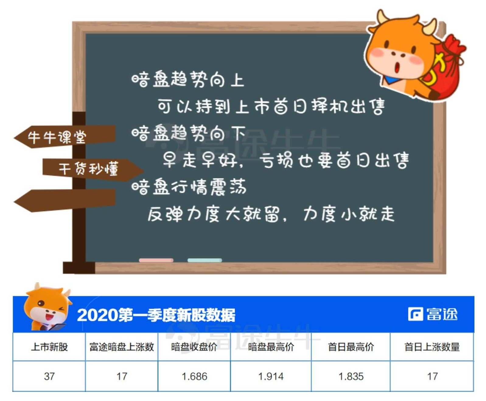

6.1.9.1. 打新秘籍 | 暗盘卖还是首日卖？破发抄底可取吗？
当我们申购新股中签时，该在何时卖出呢？俗话说「会买的是徒弟，会卖的才是师傅」。今天牛牛带大家了解港股打新的卖出时机，以及破发股的利与弊，帮助大家锁定收益！
6.1.9.1.1. 01 暗盘卖还是首日卖？卖出时机因“股"而异
暗盘是港股独有的交易机制，在新股上市前一天交易，不通过交易系统，而是通过券商内部系统进行报价撮合的交易。
我们可以在暗盘像正常交易股票一样，进行买入或者卖出。
首先是做好交易前心理准备，一般中签公布后，可以根据总体中签情况、定价范围等预测暗盘和首日的涨跌幅。
比如认购一般，散户中签居多，且上限定价，这样首日预期抛压较大，可能会比较为危险。
如果你是一个什么都不懂的小白，不妨选择在暗盘开始的前三分钟卖出吧，这样可以锁定大部分收益！

从2020年第一季度的打新回顾来看，平均暗盘最高价要高于首日上市的最高价，在开盘45.95％的上涨率来看，暗盘卖出或许是更加稳健的选择。
如果你已经对港股打新比较熟悉了，还可以选择一些高阶的玩法。我把大盘股和小盘股的卖出策略单独分开。
对于小盘股，在暗盘卖出有更大的机率锁定收益。对于庄家看好的股票，很可能会在暗盘拉高出货，这时候跟随主力的步伐，卖出止盈是个不错的选择。
对于暗盘大幅低开或小幅低开并加速下探，建议盘中反弹卖出，低开证明市场不看好这只股票，下跌只会带来更多的人抛售股票。暗盘低开的股票首日往往也会低开，幅度还会比暗盘大。
所以暗盘低开千万别舍不得割肉，上市首日的跌幅往往更严重。
对于大盘股，大家都对它有种莫名的好感。大盘股除了有业绩、基本面的支撑，往往还会找一些知名的保荐人来保驾护航，大盘股可以讲故事、谈情怀、聊理想，市场就喜欢有故事的公司。
所以对于经营稳定的大盘股，基本上不会有大幅的下跌。尤其是对于有绿鞋的大盘股，暗盘破发，首日60％的概率还是会破发，但是有很大概率可以在发行价卖出。
所以大盘股暗盘下跌，不妨等一等，等股价反弹到发行价附近卖出，如果没有反弹到发行价，则在首日收盘价止损卖出。如果暗盘上涨，你又十分看好这家公司，也可以等到上市首日选择一个高位卖出。
另外，打新不是炒新，牛牛不建议新手持有新股太长时间，一定在上市首日收盘前卖出。对于90％的公司，上市首日的价格就是他历史的最高位。
在牛牛看来，港股新股最佳卖出时机是：暗盘卖出>首日开盘卖出>首日收盘卖出。对于小盘股在暗盘卖出是一个不错的选择，大盘股可以根据具体情况选择在暗盘或者在上市首日卖出。
设置好止盈止损策略，如果你的目标就是盈利+50％，那涨到+50％卖出即可，不要幻想可以卖在最高点，只赚最有把握的钱；也不要因为下跌就舍不得卖，最终变成了股东。盈利亏损都是正常的事，走的时候一定要坚决，宁可错过大涨，也千万别被套牢。
6.1.9.1.2. 02 破发抄底需谨慎
破发股就是股价跌破发行价的股票。一级市场，通常也叫做发行市场。二级市场通常也叫做交易市场。股票的发行价即是一级市场的认购价。当二级市场低迷时，股价有可能会跌到发行价以下，即破发。
6.1.9.1.2.1. 破发抄底可行么
从目前的股市行情来看，股票如果破发很大的程度上是因为投资者受市场的下挫影响，加剧了投资者的恐慌性抛盘，对于遇到这样的个股，投资者们应该看整个基本面是不是发生一个逆向转变，不要过于盲目的抛售或者说进行所谓的抄底。
都说风险是涨出来的，机会是跌出来的，考虑到港股目前整体估值正处于历史较低位，吸引了机构资金的大量涌入。
市场不少投资者看好破发被低估的港股，但要在上百只鱼龙混杂的各色港股中选出合适和靠谱的品种，并不是一件容易的事。对急于上车抄底港股的广大投资者来说，应该如何投资，该选大盘？选龙头？选中小？还是选被打压较惨的香港本地股？
破发抄底需谨慎，香港上市的内资股，基本不受香港政治风波冲击，而且普遍比内地上市公司估值低，相对内地市场，有更大的上升空间。
随着中资在港股定价权的增强，未来港股的投资收益更加可期。可以重点关注互联网新经济，伴随着90后的消费能力和话语权的增长，包括阿里、美团、小米等一大批优秀的内地互联网公司增长潜力巨大，并且近来京东、网易等中概股回流也掀起了一波热潮。
不过归根结底，我们买股票还是要对这家公司不仅从指标上多做分析，也要结合公司的整体基本情况。在进行股票交易时候要择时交易，顺势而为。
6.1.9.1.3. 能否买入低价股做长线持有
现在很多投资者都在问牛牛，2元左右的低价股能不能买。实际上，破发抄底也是有学问的，需要从这里面进行筛选，这也是需要一定的时间的。
上市公司基本面良好，历史盈利记录稳定，保持正常经营，没有退市风险的2元左右低价股，继续下跌的空间有限，对于喜欢长线持股，拥有穿越牛熊能力和偏爱低价股的股民来说，确实是以低价买入分批建仓，开始中长线布局的好时机。
从历次牛熊的角度看，不管是股指出不出现「牛市」，只要是阶段性股指出现上涨，那么价值股类型的上市公司均会出现上涨。牛牛总结了价值股的优势：
上市公司具有稳定的业绩增长；
股票价格有着明显的稳定向上性；
就算股票价格出现了阶段下跌，未来只要主营业务不出现大问题，朱来股票价格
能大概率补涨回来；
- 有较高的股息分红。
如果破发股满足上面的特质，那么跌下来的是价值，越跌越买也要注重策略。
价值投资中选择的价值股，并不是一直的上涨，它也会出现下跌。那么，就越跌越买吗？牛牛认为，普通投资者的投资情绪存在波动，如果全仓去投资价值股，可能实现的盈利性会大一些。但是，也存在阶段性的下跌，而短线具有不可预测性。所以，这种情况也是需要规避的。
那么，在面对下跌，以定投的方式执行更为合适。很多投资者看到的是定投的盈利性不能最大化，却没有看到定投的优势：一则是股票价格出现了下跌有着持续的资金定投，还能在下跌的过程中摊低成本；二则是股票价格出现了上涨也能不踏空。可以说是一举两得的方式方法。
投资是一件需要长期坚持的事情，财富也是需要慢慢积累的，放平心态，不浮躁，前面的路还很长。